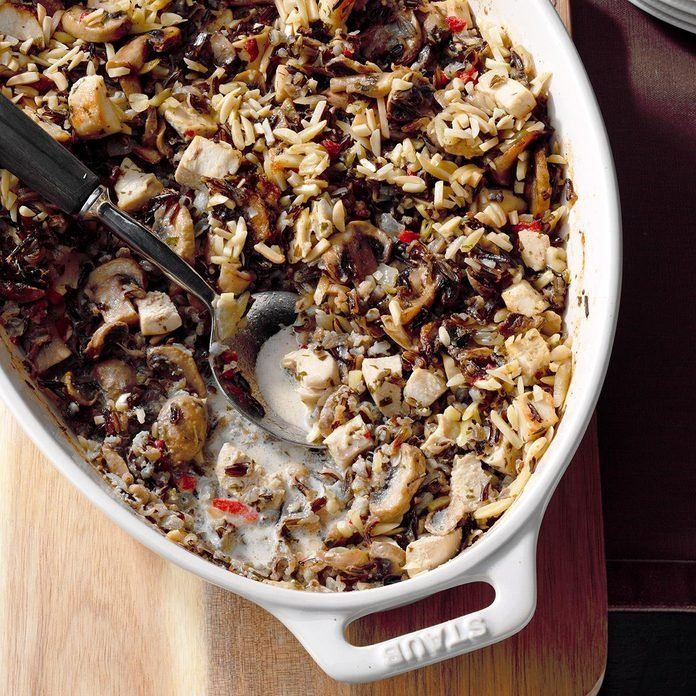

Chicken and Wild Rice Hotdish

Description
Great mix of Great Midwest food. Just like all hotdishes, simple to make and simple to back.
Ingredients
- 3 cups water
- 1 cup uncooked wild rice
- 2-1/2 teaspoons salt, divided
- 1/4 cup butter, cubed
- 1 pound sliced fresh mushrooms
- 1 medium onion, chopped
- 3 cups diced cooked chicken
- 1 jar (2 ounces) chopped pimiento, drained
- 1/4 cup minced fresh parsley
- 1/4 teaspoon pepper
- 1 cup chicken broth
- 1 cup heavy whipping cream
- 1/4 cup grated Parmesan cheese
- 3/4 cup slivered almonds
Steps
- In lar saucepan, bring water to a boil
- Stir in rice and one teaspoon of salt, reduceheat and simmer with cover until kernels have puffed open(about 45-50 minutes).
- When rice is cooked drain excess water.
- Preheat oven to 350 degrees.
- In a 6-qt. stockpot, heat butter over medium-high heat.
- Saute mushrooms and onions in stockpot for 5 minutes.
- When the mushrooms and onions are done, stir in the rice, chicken, pimiento, parsley, pepper, broth, cream, and remaining salt.
- Transfer to a 3-qt. or 13x9 baking dish. Sprinkle with cheese and almonds.
- Bake, uncovered, until heated through(about 50-60 minutes).